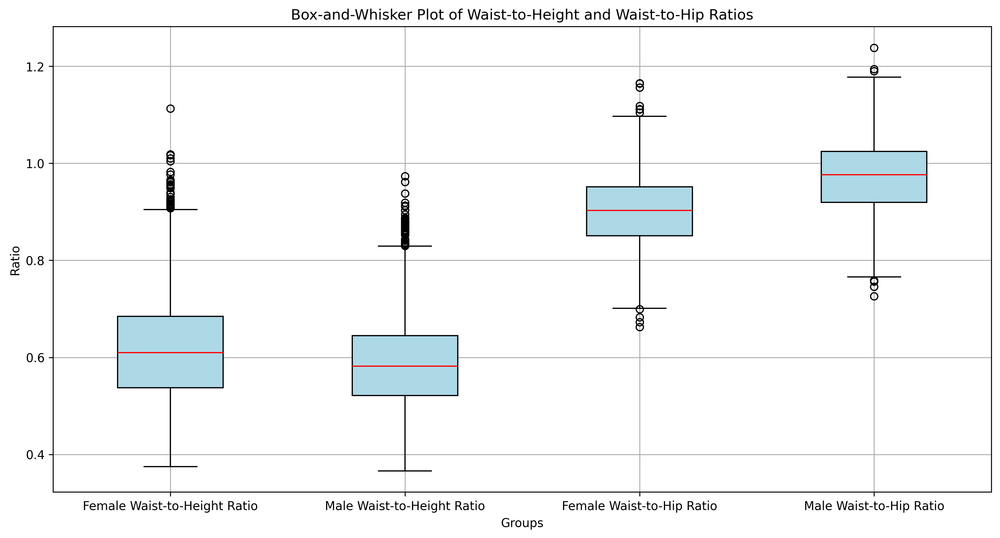

Exploratory analysis · Statistics
NHANES body measurement analysis
What do distributions and body-measurement ratios reveal about a sample?
I explored body measurements with descriptive statistics, distribution plots, derived ratios, and Pearson and Spearman correlations.
Looking at the spread, overlap and outliers makes the comparison more informative than a single average. Derived ratios offer another view of the measurements, while still requiring careful interpretation.

The process
How I approached it
-
Inspect and summarise measurements
Reviewed the female and male extracts, handled missing values, and calculated descriptive statistics including location, spread, skewness and kurtosis.
-
Create interpretable features
Calculated BMI and waist-to-height and waist-to-hip ratios. Used standardization where needed to compare variables on different scales.
-
Communicate distributions and relationships
Used histograms, box plots and scatterplot matrices, alongside Pearson and Spearman correlation, to examine how the measurements vary and relate.
The evidence
What the results show
Ratios add context to raw measurements
The retained box plots show different medians and overlapping distributions across the analysed groups. Averages alone cannot describe that variation.
Visualization supports statistical interpretation
Distribution plots expose outliers and asymmetry, while correlation views help distinguish the strength of relationships between measurements.
Reading the results responsibly
Where the evidence stops
These are descriptive findings about the analyzed extracts. This case study does not claim causal relationships, clinical diagnoses or survey-weighted population estimates. Differences between sample groups need context before generalization.
What I would evaluate next
Document survey design and weighting before making population-level comparisons, and investigate unusual values against the original measurement definitions.
Explore the work
The GitHub repository contains the analysis notebook, figures, requirements and data documentation. The portfolio reproduces one aggregate figure; no participant records are included here.
Code, results & methodology